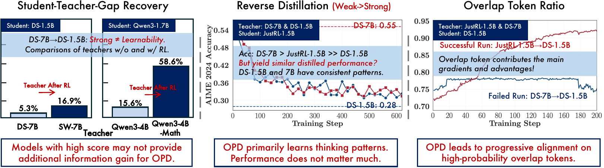

0. 这一篇讲什么
第 3 篇里 OPD 看起来几乎是免费的午餐：比 RL 快一个数量级，pass@k 还更高。但 2026 年上半年出现了一批论文，专门报告 OPD 失败的情况：换一个更强的 teacher 反而更差，训练到一半回答长度突然暴涨，teacher 和 student 的 KL 已经很低但准确率在掉。这一篇把这些工作放在一起，回答两个问题：
- OPD 成功时，模型内部到底发生了什么？ 什么样的 teacher 才"教得动"？
- OPD 有哪几类典型的失败方式？ 每一类的机制和修补办法是什么？
本篇选入的论文和筛选理由：
| 论文 | 角色 | 为什么选 |
|---|---|---|
| Rethinking OPD（Li et al., THUNLP, 2604.13016） | 机制主线 | 控制最好的机制研究：同尺寸 RL 前后 teacher 对比、反向蒸馏检验、token 重叠分析 |
| The Many Faces of OPD（Zhu et al., 2605.11182） | 失败模式 | 指出 top-K 截断的梯度偏差、student 前缀导致 teacher 失准，NeurIPS 2026 接收 |
| Demystifying OPD（Wang et al., 2607.13399） | 失败模式 | "最强的 teacher 可能最差"与长度钻空子的分析 |
| Stable-OPD（Luo et al., 2604.08527） | 失败模式 | 长度膨胀的机制，和上一篇互相印证，只简述 |
| Revisiting OPD（Fu et al., 2603.25562） | 失败模式 | 采样 token 估计量的偏差–方差分析和简单修补 |
| KAT（Xin et al., 2606.09471） | 失败模式 | "低 KL 不等于健康"，少数报告 3 个随机种子的工作 |
需要先说明证据的整体质量：这些论文几乎都在 8B 以下的 Qwen 系列模型上做实验，任务以数学为主，AIME 这类只有 30 道题的评测集占了很大比重，多数没有报告随机种子。所以下面的结论应当读作"在小模型、数学推理设定下被多篇论文独立观察到的现象"，而不是已经确立的规律。几篇论文从不同角度得出了一致的结论，这是比单篇论文的数字更可靠的证据。
1. OPD 成功时发生了什么
1.1 学的是共享的高概率 token
Rethinking OPD（Li et al., 2026）的记号是：在 student 访问的前缀 $\hat y_{<t}$ 上，student 的分布为 $p_t$，teacher 的为 $q_t$。除了标准的采样 token 损失 $\ell_t = \log p_t(\hat y_t) - \log q_t(\hat y_t)$，它定义了两个诊断量：
- 重叠率：两边各取 top-$k$ token，$\mathcal{M}_{\text{overlap}} = \mathbb{E}_t\big[|S_t^{(p)} \cap S_t^{(q)}| / k\big]$。
- 重叠 token 上的优势：$A_t(v) = \bar p_t(v)\big(\log \bar q_t(v) - \log \bar p_t(v)\big)$，$\bar p, \bar q$ 是在 top-$k$ 上重新归一化后的分布。
主要发现是：
- 重叠的 token 承载了 97% 到 99% 的概率质量。 student 和 teacher 的 top-$k$ 集合大部分是重合的，真正有区别的是这些共享 token 之间的相对概率。
- 成功的 OPD 是在这些共享 token 上逐渐对齐。 成功的训练中重叠率从约 72% 升到约 91%；失败的训练中重叠率一直平着甚至下降。
- 只优化重叠 token 就够了。 只在重叠 token 上算损失，效果和在 student 全部 top-$k$ 上算相当；只在非重叠 token 上算则失败。
这个发现改变了对 OPD 的一个常见直觉。人们常说 OPD 的优势在于 teacher 能告诉 student"你从没想过的那个 token 才是对的"。但证据表明，主要的学习信号来自 student 已经认为合理的几个候选之间的重新排序，而不是引入全新的 token。这也解释了为什么 student 和 teacher 的"思维方式"必须足够接近：如果两边的高概率 token 几乎不重叠，就没有可以对齐的共享集合。
1.2 什么样的 teacher 教得动

论文用"差距追回率"衡量 OPD 的效果：$(\text{Acc}_{\text{after}} - \text{Acc}_{\text{before}}) / (\text{Acc}_{\text{teacher}} - \text{Acc}_{\text{before}})$。几个对照实验给出了两个条件：
条件一：teacher 要带来 student 没见过的能力，分数高不够。 用同一个模型 RL 前后的两个版本当 teacher：DS-1.5B 作为 student，R1-Distill-7B（RL 前）的追回率只有 5.3%，同一个模型 RL 之后（Skywork-OR1-Math-7B）是 16.9%；Qwen3-1.7B 作为 student，Qwen3-4B 是 15.6%，它的 RL 版本是 58.6%。论文的解释是：R1-Distill 系列的 1.5B 和 7B 都是从同一批 teacher 数据蒸馏出来的，对 1.5B 的 student 来说，7B 模型的分布里没有什么新东西；RL 之后的模型则带有 student 训练数据里没有的行为。
中间那张图是最有说服力的证据。 student 是 JustRL-1.5B（一个做过 RL 的 1.5B 模型），分别用它 RL 之前的版本 R1-Distill-1.5B 和分数高得多的 R1-Distill-7B（AIME24 0.55 对 0.28）做 teacher。两条训练曲线几乎重合，都把 student 拉回到它 RL 之前的水平。也就是说，OPD 传递的是 teacher 的思维模式（thinking pattern），而不是 teacher 的分数，从 student 的视角看，同家族的 1.5B 和 7B 几乎无法区分。
条件二：思维模式要兼容。 让同一个 student 分别向两个分数相近、但思维模式不同的 teacher 蒸馏（非思考模式的 Qwen3-4B 和直接在 Base 上做 GRPO 的 Qwen3-4B-Base-GRPO），结果差别很大。论文给出的修补办法有两个：
- 先 off-policy 冷启动：用 20 万条 teacher 回答做 SFT，再做 OPD，效果稳定好于直接 OPD。这正是 Qwen3 的两段式流程（第 3 篇）。
- 用 teacher 熟悉的提示：使用 teacher 自己的对话模板可以提高初始重叠率，student 追回的 teacher 性能比例从约 80% 提高到约 85%；用 teacher 后训练用过的提示也能提高 student 在重叠 token 上的质量，但会显著降低 student 的熵，论文建议混入一些分布外的提示。
1.3 两篇独立工作的印证
另外两篇论文用不同的模型和数据得到了同样的结论：
- Many Faces（Zhu et al., 2026）：经过 200 步 GRPO 的 Qwen3-1.7B 和 Qwen3-8B 分数相近（Math500 0.82 对 0.83，AIME24 0.30 对 0.28），但用前者当 teacher 的效果"显著好于"用后者。
- Demystifying OPD（Wang et al., 2026）：最强的 teacher（Qwen3-4B-GRPO）蒸馏出的 student 七个数学评测平均 26.7，弱一些的 Qwen3-1.7B-GRPO 是 28.1。他们定义了一个"信息量"指标，衡量 teacher 的 log-prob 优势能否区分 student 的正确和错误回答：
$$ I = \mathbb{E}[\Delta\ell \mid r = 1] - \mathbb{E}[\Delta\ell \mid r = 0], \qquad \Delta\ell = \frac{1}{|y|}\sum_t \big(\log\pi_T(y_t) - \log\pi_\theta(y_t)\big) $$
最强的那个 teacher 的 $I$ 持续为负：它对 student 错误回答给的 log-prob 优势反而比对正确回答更高，等于在奖励错误。
这三篇论文一致的结论是：teacher 的价值不在于它多强，而在于它在 student 会访问的状态上能否提供 student 自己没有、又能被 student 吸收的信号。 Joanna 笔记里引用的"最小代码编辑"实验也指向同一个方向。它出自 nrehiew 的一篇博客（SFT, RL, and On-Policy Distillation Through a Distributional Lens, 2026-05），不是论文：在同一个任务上分别用 SFT 和 RL 训出两个 teacher，SFT teacher 的通用代码能力退化明显（LiveCodeBench v6 0.286 对 RL teacher 的 0.320），但用它做 OPD 得到的 student 在目标任务上反而略好（Pass@1 0.800 对 0.787），通用能力也没有跟着退化（0.297）。差距很小，且是单次实验，只能作为旁证：它说明 OPD 只在 student 自己的分布上吸收 teacher 的目标行为，不会整体复制 teacher。
还有一个值得注意的推论：工业界的 teacher 几乎都是 RL 训出来的（第 3 篇），这可能不是巧合。RL 恰好产生了"同一个模型在 RL 前后的差异"这种 student 无法从 SFT 数据中学到的信号。第 5 篇的 Direct-OPD 把这一点推到了极致：只蒸馏这个差异本身。
2. 失败模式一：估计量与截断的偏差
2.1 采样 token、全词表与 top-K
第 1 篇第 5 节讲过，逐 token 的 reverse KL 有几种计算方式：只用采样的那个 token（方差大，但只需要 teacher 返回一个 log-prob）、在全词表上精确求和（最准确，但通信和显存开销大）、在 top-K 上近似。Revisiting OPD（Fu et al., 2026）在附录里把第 1 篇的玩具实验做成了正式分析：序列级估计量 $\hat g_{\text{seq}} = \sum_t (\sum_{t'} r_{t'}) s_t$ 无偏，但最坏情况方差是 $O(T^4)$；逐 token 估计量 $\hat g_{\text{tok}} = \sum_t r_t s_t$ 有偏，偏差恰好是 $\mathbb{E}[\sum_t \sum_{t'>t} r_{t'} s_t]$（也就是被丢掉的"未来项"），但最坏情况方差只有 $O(T^2)$。$s_t$ 是 $\nabla\log\pi_\theta(y_t\mid c_t)$。这正是工业实现选择 $\gamma = 0$ 的定量理由。
2.2 不归一化的 top-K reverse KL 会让训练崩溃
Many Faces 指出了一个非常具体、也很容易在实现中踩到的错误。只在 top-K 集合 $S_K$ 上计算 reverse KL、但不对两个分布重新归一化时，梯度是
$$ \nabla \mathcal{L}_{\text{TopK-RKL}} = \sum_{v \in S_K} \pi_S(v)\left[\log\frac{\pi_S(v)}{\pi_T(v)} + 1\right] \nabla \log \pi_S(v) $$
全词表时那个 "+1" 项的贡献是 $\sum_v \pi_S(v)\nabla\log\pi_S(v) = \nabla \sum_v \pi_S(v) = 0$；截断到 $S_K$ 后它变成 $\nabla \sum_{v\in S_K}\pi_S(v)$，不再为零，而是会系统性地压低 student 在 top-K 上的总概率。论文观察到，用不归一化的 Top-20 reverse KL 训练，数学准确率先上升，大约到第 1000 步塌到接近零。
下面的实验让 student 从与 teacher 完全相同的分布出发，分别用不归一化和重新归一化的 top-K reverse KL 做梯度下降：
import numpy as np
# Top-K reverse KL on a 50-token vocab. Student starts EXACTLY at the teacher.
V, K, lr, steps = 50, 5, 0.5, 300
rng = np.random.default_rng(0)
def softmax(z): e = np.exp(z - z.max()); return e/e.sum()
zT = rng.normal(size=V)*2.5; pT = softmax(zT); S = np.argsort(-pT)[:K] # teacher's top-K support
def grad_unnorm(z): # d/dz sum_{v in S} p(v) log(p(v)/pT(v)) (no renormalization)
p = softmax(z); g_p = np.zeros(V); g_p[S] = np.log(p[S]/pT[S]) + 1
return p*(g_p - np.dot(p, g_p)) # chain rule through softmax
def grad_norm(z): # same KL after renormalizing both p and pT on S
p = softmax(z); ps = p[S]/p[S].sum(); ts = pT[S]/pT[S].sum()
g_ps = np.log(ps/ts) + 1 # dKL/dps
g_p = np.zeros(V); m = p[S].sum()
g_p[S] = (g_ps - np.dot(ps, g_ps))/m # d ps / d p[S]
return p*(g_p - np.dot(p, g_p))
for name, gf in [("unnormalized top-K", grad_unnorm), ("renormalized top-K", grad_norm)]:
z = zT.copy()
for t in range(steps + 1):
if t in (0, 100, 300):
p = softmax(z)
print(f"{name} step {t:3d}: student mass on top-K = {p[S].sum():.3f} (teacher {pT[S].sum():.3f}), "
f"full KL(S||T) = {np.sum(p*np.log(p/pT)):.3f}")
z -= lr*gf(z)
print()
输出：
unnormalized top-K step 0: student mass on top-K = 0.640 (teacher 0.640), full KL(S||T) = 0.000
unnormalized top-K step 100: student mass on top-K = 0.261 (teacher 0.640), full KL(S||T) = 0.334
unnormalized top-K step 300: student mass on top-K = 0.236 (teacher 0.640), full KL(S||T) = 0.387
renormalized top-K step 0: student mass on top-K = 0.640 (teacher 0.640), full KL(S||T) = 0.000
renormalized top-K step 100: student mass on top-K = 0.640 (teacher 0.640), full KL(S||T) = 0.000
renormalized top-K step 300: student mass on top-K = 0.640 (teacher 0.640), full KL(S||T) = 0.000
即使 student 一开始就和 teacher 完全一样，不归一化的版本也会把它推离 teacher：top-K 上的质量从 0.640 掉到 0.236，真正的 KL 从 0 升到 0.387。0.236 不是巧合：在 top-K 内部保持相对比例时，截断损失关于总质量 $m$ 是 $m \log(m/m_T)$ 加常数，最小值在 $m = m_T/e = 0.640/2.718 \approx 0.235$。也就是说这个损失的最优解本身就是错的，它要求 student 把大约 63% 的高概率质量挪到尾部。在真实训练里，这些质量流向 teacher 从来不看的尾部 token，最终表现为生成崩溃。重新归一化的版本则停在 teacher 处不动。
修补方法有三种：重新归一化（如上），对 "+1" 项停止梯度，或者干脆使用采样 token 的策略梯度形式（它天然没有这个问题）。Revisiting OPD 的 teacher top-K"局部支撑匹配"、THUNLP 的 top-$k$ 变体都做了重新归一化。
2.3 采样 token 和 top-K 哪个更好
在正确实现的前提下，几篇论文的结论并不一致：
- Revisiting OPD 认为采样 token 估计太脆弱，提出 teacher top-K 上重新归一化的 reverse KL，加上 top-p 采样和特殊 token 屏蔽。单任务数学上（Qwen2.5-7B-Instruct 学生，OpenThinker3-7B 老师，五个评测平均），student 起点 28.2、teacher 56.0，采样 token OPD 到 36.4，他们的方法到 41.7。数学 + ALFWorld 多任务设置下数学平均从 34.8 到 41.7。这就是笔记里"+19.8%"的来源：它是相对提升（41.7/34.8 − 1），绝对值是 6.9 个点，而且对比的是没加特殊 token 屏蔽的基线；和加了屏蔽的基线（36.6）比，相对提升约 14%。他们的消融还显示 top-K 只有和 top-p 一起用才有帮助（AIME24 上 top-K 单独用是 17.7，低于采样 token 的 20.4；两者一起是 23.6）。
- THUNLP 的消融则发现 top-1 最差、$k > 4$ 之后几乎没有额外收益，采样 token 已经足够。
这两个结论可以调和：THUNLP 用的回答长度较短、teacher 和 student 兼容性好；Revisiting 处理的是 16K 上下文、跨家族的 teacher。估计方式的重要性和第 3 节讲的"teacher 在 student 前缀上是否可靠"相互作用：teacher 越可靠，单个采样 token 的信号越够用；teacher 越不可靠，越需要在多个候选上取平均来降噪。
3. 失败模式二：teacher 在 student 的前缀上不可靠
DAgger 的理论假设专家在任何状态下都能给出正确动作（第 1 篇 2.2 节）。LLM teacher 不满足这个假设：student 生成的前缀可能把 teacher 带到它自己永远不会进入的状态。
- Many Faces 做了一个直接的测量：Qwen3-14B 自己做 GPQA-Diamond 是 62.1%，如果让它接着 student 写到一半的推理继续往下做，准确率掉到 46.0%。在这种前缀上，teacher 会给 "wait" 之类的修正 token 很高的概率，这些 token 的信号未必对 student 有用。
- THUNLP 测量了这个效应随深度的变化：让 teacher 从 student 前缀的不同位置接手续写，相对 student 自己续写的准确率增益在前缀长度 1K、4K、8K、16K 时分别是 +0.3659、+0.2709、+0.1522、+0.0237。到 16K 时 teacher 几乎已经没有额外价值。 对应地，他们把最大回答长度设为 10K 和 15K 时训练会停滞并在后期崩溃（重叠率下降，熵和梯度范数飙升），3K 到 7K 最好。这正是 Joanna 笔记里写的"长序列崩溃"，数字现已核实。
KAT（Xin et al., 2026）指出了这个问题更隐蔽的一面："KL 一致陷阱"。当 student 走进一个无法挽回的前缀后，teacher 在局部也可能"同意"它，比如两边都高概率地生成一些表面上合理的片段。此时 reverse KL 很低，看起来训练很健康，实际上没有任何纠正信号。论文观察到，把这些"同意阶段"和之后的 token 加回训练反而会降低 MATH500 准确率，它们的梯度方向和净更新的主方向也对不上。
KAT 不改损失，而是加一个在线截断规则：对逐 token KL $d_t$ 做长度为 $W$ 的滑动平均 $z_t$，当 $z_t$ 连续 $N$ 次低于一个由历史数据分位数决定的阈值时，从这段低 KL 区间的开头截断 rollout。在 Qwen3-8B 教 Qwen3-1.7B-Base 和 4B-Base 的设置下（3 个种子），平均准确率从 30.27 到 31.08，提升很小；主要收益在效率：rollout 平均长度从 1480 降到 596（−59.7%），1.7B 的训练时间从 12.3 小时降到 5.2 小时。
这三篇工作合起来说明：OPD 的稠密信号随着前缀变长而变得不可靠，而且低 KL 不是健康的标志。 对长思维链，可行的办法是只在前缀的可靠部分上教，或者检测到 teacher 失去区分力时截断。第 6 篇和第 8 篇会讲专门针对这一点的方法（按 token 的可教性加权、前缀蒸馏、剪枝）。
4. 失败模式三：长度膨胀与长度钻空子
第 2 篇讲过 MiniLLM 早就发现 reverse KL 的累计奖励对短回答有利，因而加了长度归一化。在长思维链 OPD 里，长度问题以两种相反的形式重新出现。
Stable-OPD（Luo et al., 2026）报告了"突然的重复饱和"：训练中某个时刻截断率和重复率同时飙升，MATH500 准确率随之下降。机制是：崩溃之后，重复 token 约占全部 token 的 30%，而它们携带的优势是平均值的 4 到 9 倍。原因不难理解：一旦 student 开始重复，teacher 在这个前缀上往往也会高概率地预测同样的重复内容，于是 $\log\pi_T - \log\pi_\theta$ 在这些 token 上是正的，重复被奖励，形成正反馈。论文的修补是在 OPD 损失上加标准答案的 SFT 损失，再加一个到初始 student 的 KL 锚定。7B 上平均分 47.6 对 OPD 的 43.8；但消融显示主要收益来自 SFT 混合（1.5B 上 OPD 28.0，加 KL 锚定 29.7，再加 SFT 混合 35.7），KL 锚定作用不大。Joanna 笔记里说 StableOPD 的做法是"熵下限"，这个描述有误，论文里没有熵下限；用熵来调节的是另一篇 Entropy-Aware OPD（第 6 篇）。
Demystifying OPD 把长度问题分成两种模式：
- 无尽探索：在优势为负的回答里，填充 token 会稀释负优势。如果回答的核心部分优势是 $A_{\text{core}}$，长度从 $T_0$ 被填充到 $T$，平均优势变成
$$ \bar a = \frac{A_{\text{core}}}{T} + \frac{T - T_0}{T}\,\bar a_{\text{filler}} $$
只要填充内容的优势 $\bar a_{\text{filler}}$ 接近零（teacher 和 student 都认为这些 token 合理），回答越长平均惩罚越小。
- 突然退化：在前缀有利时提前截断，保住前面的正优势。
他们的修补是对逐 token 的 log 比值做硬裁剪 $\mathrm{clip}(\Delta\ell_t, c_{\min}, c_{\max})$ 或对数压缩 $\mathrm{sign}(\Delta\ell_t)\log(1+|\Delta\ell_t|)$，平均提升 0.5 到 2.3 分，而且哪种更好取决于 teacher。这部分证据较弱（单次运行、增益小），论文的价值主要在诊断。
KDRL（第 5 篇）也独立报告了纯 reverse KL OPD 会让 AIME24 上的回答长出 6K 多 token、截断率接近 15%。
长度问题的根源在第 1 篇第 5 节已经埋下：工业实现用 $\gamma = 0$，每个 token 只看自己的 log 比值，不考虑"当前 token 会把序列带向多长、多好的未来"。在这种设定下，序列长度本身成了 student 可以操纵、而损失看不到的变量。
5. OPD 有效的条件
把本篇的结论整理成一张检查表，可以在动手做 OPD 之前逐项确认：
| 条件 | 证据 | 不满足时的处理 |
|---|---|---|
| teacher 带来了 student 训练数据里没有的能力（例如 RL 后的模型） | THUNLP 图 1、Many Faces、Demystifying | 换 teacher；或者只蒸馏 RL 带来的差异（第 5 篇 Direct-OPD） |
| teacher 和 student 的思维模式兼容（高概率 token 大量重叠） | THUNLP 重叠率分析 | 先用 teacher 数据 SFT 冷启动；使用 teacher 的模板和提示 |
| teacher 在 student 的前缀上仍然可靠 | Many Faces GPQA 62.1→46.0；THUNLP 前缀深度实验 | 限制 rollout 长度；检测到失准时截断（KAT）；按可教性加权（第 6 篇） |
| 估计量实现正确 | Many Faces top-K 偏差；本文代码 | top-K 必须重新归一化或对 +1 项停梯度 |
| 长度不被钻空子 | Stable-OPD、Demystifying、KDRL | 监控截断率和重复率；对优势裁剪；混入 SFT 损失 |
6. 对 Joanna 笔记的修正
- 笔记把 2603.25562 写成 "Many Faces of OPD"。这是两篇不同的论文：2603.25562 是 Fu et al. 的 Revisiting On-Policy Distillation: Empirical Failure Modes and Simple Fixes；The Many Faces of On-Policy Distillation 是 Zhu et al. 的 2605.11182。"偏差–方差分析"出自前者的附录，"top-K 梯度偏差"出自后者。
- "+19.8%"是相对提升，绝对值为 +6.9 个点，对比的是未屏蔽特殊 token 的基线。
- "teacher 越大不一定越好"的准确说法是：teacher 必须提供新能力，分数高不够；同家族 1.5B 与 7B 对 student 来说"分布上无法区分"。
- "长序列崩溃：teacher 优势 1K 时 +0.37、16K 时 +0.02"已核实（THUNLP 图 11b）。
- StableOPD 不是熵下限，而是 SFT 混合加 KL 锚定。
参考文献
- Li et al. Rethinking On-Policy Distillation of Large Language Models: Phenomenology, Mechanism, and Recipe. 2026. arXiv:2604.13016.（ICML 2026 FoGen Workshop）
- Zhu et al. The Many Faces of On-Policy Distillation: Pitfalls, Mechanisms, and Fixes. 2026. arXiv:2605.11182.
- Wang et al. Demystifying On-Policy Distillation: Roles, Pathologies, and Regulations. 2026. arXiv:2607.13399.
- Luo et al. Demystifying OPD: Length Inflation and Stabilization Strategies for Large Language Models. 2026. arXiv:2604.08527.
- Fu et al. Revisiting On-Policy Distillation: Empirical Failure Modes and Simple Fixes. 2026. arXiv:2603.25562.
- Xin et al. Escaping the KL Agreement Trap in On-Policy Distillation. 2026. arXiv:2606.09471.
- Xu et al. KDRL: Post-Training Reasoning LLMs via Unified Knowledge Distillation and Reinforcement Learning. 2025. arXiv:2506.02208.
- nrehiew. SFT, RL, and On-Policy Distillation Through a Distributional Lens. 博客, 2026-05.